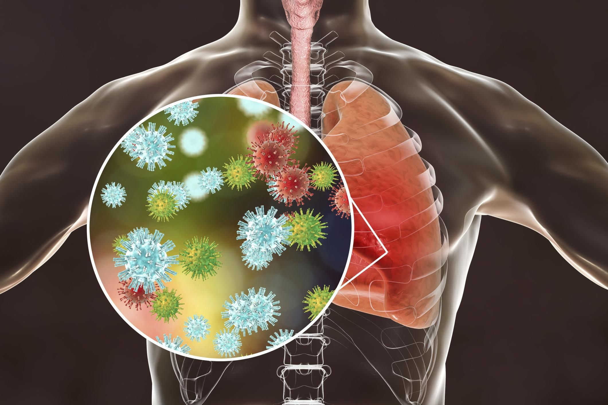

Тяжки́й го́стрий респірато́рний синдро́м (ТГРС) (англ. Severe Acute Respiratory Syndrome / SARS) — вірусне інфекційне захворювання, особливий варіант коронавірусної інфекції, здатний до небезпечного епідемічного поширення, в тому числі й внутрішньогоспітального, з переважанням повітряно-крапельної передачі інфекції з ураженням дихальної системи та, у тяжких випадках, з появою атипової пневмонії[3] з виразною гострою дихальною недостатністю. Легкість зараження, швидкість поширення, тяжкий перебіг, висока летальність — особливості, які дозволяють віднести ТГРС до тих інфекційних захворювань, які виявили здатність чинити серйозний вплив на здоров'я населення і можуть швидко поширюватися в міжнародних масштабах та увійшли до переліку подій, які можуть спричинити надзвичайну ситуацію в галузі охорони здоров'я, тому ТГРС стали регулюватись сучасними Міжнародними медико-санітарними правилами (ММСП) 2005 року
